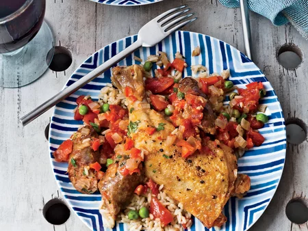

Healthy Chorizo Recipe!
Ingredients:
- 2 tablespoons extra-virgin olive oil
- 4 links fresh chorizo or hot Italian sausage
- 4 whole chicken legs
- Salt and freshly ground pepper
- 2 garlic cloves, minced
- 1 medium red onion, coarsely chopped
- 1 red bell pepper, coarsely chopped
- 1/2 teaspoon ground turmeric
- 1/4 cup dry white wine
- One 28-ounce can whole tomatoes, drained and chopped
- 6 cups chicken stock
- 1 1/2 cups long-grain rice
- 1 cup frozen peas, thawed
- 3 scallions, coarsely chopped
- 2 tablespoons chopped cilantro
- 1 jalapeño, seeded and minced

Directions:
1. In a large enameled cast-iron casserole, heat 1 tablespoon of the olive oil. Add the chorizo, cover and cook over moderate heat, turning once, until richly browned and just cooked through, 10 minutes; transfer to a plate.
2. Season the chicken legs with salt and pepper and add them to the casserole, skin side down. Cook over moderately high heat until browned, 5 minutes per side. Transfer the chicken to the plate with the chorizo.
3. Pour off all but 2 tablespoons of fat from the casserole. Add the garlic, onion and bell pepper and cook over moderate heat, stirring occasionally, until softened, 8 minutes.
4. Add the turmeric and cook, stirring, until fragrant, 30 seconds. Add the wine and boil over high heat until almost evaporated, 3 minutes. Add the chopped tomatoes and chicken stock and bring to a boil. Return the chorizo and chicken to the casserole along with any accumulated juices. Simmer over low heat until the chicken is cooked through, about 45 minutes.
5. In a medium saucepan, heat the remaining 1 tablespoon of olive oil. Add the rice and cook over moderate heat, stirring, until coated with oil. Stir in 5 cups of the chicken cooking liquid into the rice. Cover partially and cook over moderately low heat, stirring often, until the rice is just tender and has absorbed most of the cooking liquid, about 25 minutes. Stir in the peas, scallions, cilantro and jalapeño and warm over low heat. Season with salt and pepper.
6. Cut each chorizo link into 3 pieces and return them to the casserole. Gently reheat the chicken and chorizo. Spoon the rice onto large plates and top with the chorizo pieces and chicken. Spoon some of the remaining cooking liquid on top and serve.